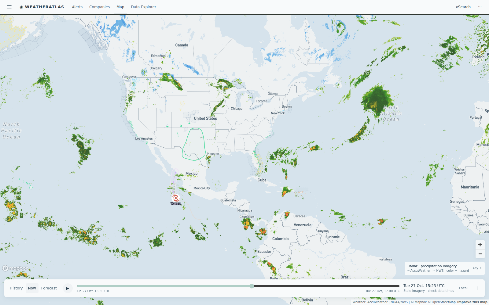

Daily severe-weather intelligence for LNG, refining, offshore, and terminal operators.

Live radar + active alert board from the AccuWeather-powered Atlas — captured ~15:20 UTC today.
| System / region | Status | Energy-asset impact |
|---|---|---|
| West Texas / SE New Mexico flash-flood threat | FLOOD | AccuWeather severe flash-flood alerts sit live on Permian producing blocks (Apache, Oxy Permian, XTO, Hilcorp, Devon-area acreage) and the Big Spring refining complex; NWS has issued no flash-flood warning on most of these fields. Water hauling, road access to well pads, and crane work face delays where cells train; watch low-water crossings on lease roads. |
| SE Coastal flood / gale pattern — Florida to Georgia (day 3) | COASTAL | Coastal Flood Warnings, High Surf and Wind Advisories persist along the entire Florida east coast; Gale Warnings still cover Bahama offshore corridors. Florida East Coast LNG terminal sites stay under surf and wind flags — berth scheduling and small-craft ops remain the week's main marine friction. |
| Colder-than-normal week ahead — northern US | COLD | NOAA CPC outlooks lean below-normal temperatures across the northern tier into early November — heating demand builds, gas burns rise, and storage withdrawals season starts. Demand-side story for gas-basin producers and LNG feedgas. |
| Tropical Atlantic / Gulf — NHC 7-day quiet | QUIET | No tropical cyclone formation expected anywhere in the Atlantic through the next 7 days (NHC). East Pacific depressions Olana and Vance stay post-season footnotes; US Gulf loading windows unconstrained by tropics. |
Today's gap is live on the same West Texas flash-flood watch: at the Big Spring refining complex, AccuWeather's enterprise feed is flagging flash-flood potential on surrounding Permian fields this morning — while the free feed's same-coordinate hourly board shows flat 0% storm chances all day and a temperature curve running 5°F light through the afternoon. One feed warns; one shrugs.
Flash-flood potential flagged on surrounding Permian fields this morning, then a clearing afternoon (0% rain after 2 PM, mid-70s°F). Free feed misses both the flag and the afternoon warmth.
View live brief →Post-frontal quiet holds: dry, mid-70s°F, gusts under 18 mph — clean dock and lift windows while the coastal pattern stays east.
View live brief →